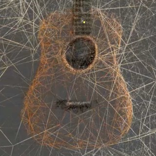

|
Angelina Yang I’m a 2nd year Electrical and Computer Engineering PhD candidate at Rice University with a research focus in computational imaging, advised by Dr. Ashok Veeraraghavan. I find great satisfaction in delivering intelligent systems that address problems that traditional imaging pipelines struggle with. With a background in optical engineering and machine learning, I’m currently building end-to-end optimized, extended depth-of-field microscopes for low-cost cancer histopathology. |

|
Research interests:Computational imaging, optics, artificial intelligence, end-to-end optimization, microscopy. |
|
 |
Radiance Meshes for Volumetric Reconstruction
Alexander Mai, Trevor Hedstrom, George Kopanas, Janne Kontkanen, Falko Kuester, Jonathan T. Barron arXiv, 2025 project page / arXiv Parameterizing a scene with a Delaunay tetrahedralization and a neural field yields a scene representation that is accurate, fast to render, easy to edit, and backwards-compatible. |
Academic Service |
Lead Area Chair, ICCV 2025
Lead Area Chair, CVPR 2025 Area Chair, CVPR 2024 Demo Chair, CVPR 2023 Area Chair, CVPR 2022 Area Chair & Award Committee Member, CVPR 2021 Area Chair, CVPR 2019 Area Chair, CVPR 2018 |
Teaching |
Graduate Student Instructor, CS188 Spring 2011
Graduate Student Instructor, CS188 Fall 2010 Figures, "Artificial Intelligence: A Modern Approach", 3rd Edition |
|
Website template from source code. |